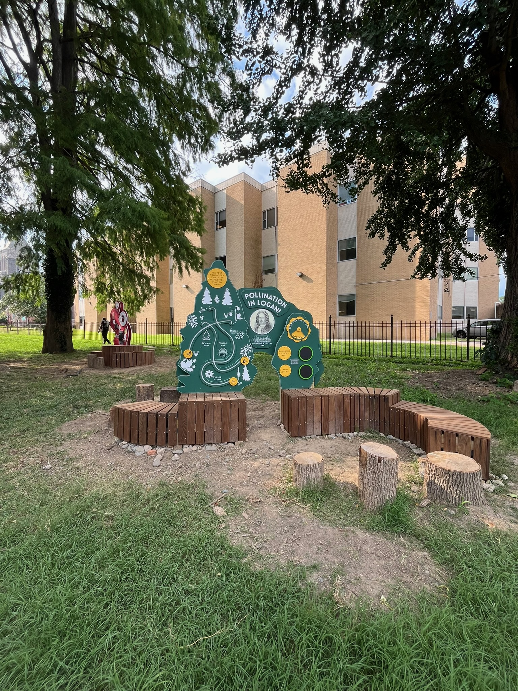

Logan Library
Co-led design and construction efforts for community projects. Fabricated 15 structural frames and prepared 250+ wood components for assembly. Co-directed community build sessions, guiding interns and summer camp participants through hands-on construction tasks.

Prototype Phase: Strength and weight testing frames.

The beginnings: Clamping and assembling frames with the team.

Finished Project: "Pollination in Logan" with seating and interactive elements.